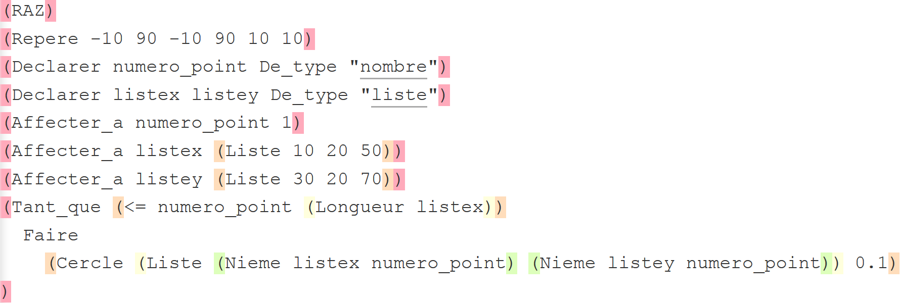
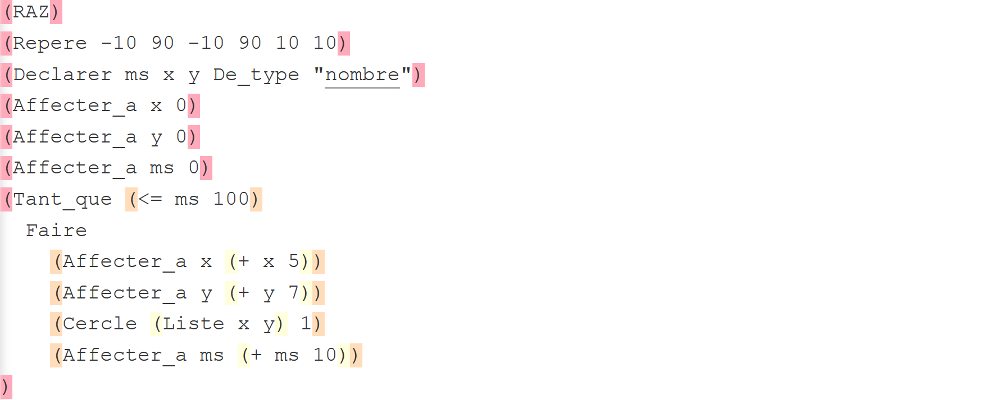

<!DOCTYPE html>
<html>
    <head>
        <meta charset="utf-8">
        <meta name="apple-mobile-web-app-capable" content="yes" />
        <meta name="apple-mobile-web-app-status-bar-style" content="black-translucent" />
        <meta name="viewport" content="width=device-width, initial-scale=1.0, maximum-scale=1.0, user-scalable=no">

        <title>Modèles de chute</title>
        <link rel="stylesheet" href="reveal/css/reveal.min.css">
        <link rel="stylesheet" href="reveal/css/theme/microalg.css" id="theme">

        <!-- If the query includes 'print-pdf', use the PDF print sheet -->
        <script>
            document.write( '<link rel="stylesheet" href="reveal/css/print/' + ( window.location.search.match( /print-pdf/gi ) ? 'pdf' : 'paper' ) + '.css" type="text/css" media="print">' );
        </script>

        <!--[if lt IE 9]>
        <script src="reveal/lib/js/html5shiv.js"></script>
        <![endif]-->

        <script type="text/javascript" src="http://ajax.googleapis.com/ajax/libs/jquery/1.8.2/jquery.min.js"></script>
        <link rel="icon" href="visuels/logo_microalg.ico" />

    </head>

    <body>
        <div class="reveal">
            <div class="slides">
                <section data-markdown data-separator="^\n----*\n" data-vertical="^\n\n" data-charset="utf-8">

                    <script type="text/template">
&nbsp;

# Modèles de chute

&nbsp;

&nbsp;

&nbsp;

<div style="text-align: right; font-size: 75%;">Christophe Gragnic, fév. 2016</div>
<div style="text-align: right;">Lycée Mandela à Nantes</div>
<div style="text-align: right; font-size: 75%;"><a href="http://galerie.microalg.info/profgra:peda:niveaux_algo">Page du TP</a></div>

---

&nbsp;

#  Contexte

* Sorte de « commande » de l’APMEP
* Travail sous contraintes

---

# Plan de la présentation

* Un TP de physique
    * chute libre filmée
    * valeurs recueillies
    * modèle : application du PFD continu
    * parabole
* Présentation rapide de MicroAlg
    * langage et outils
    * galerie (wiki = système de publication)
* Algorithmes à compléter
    * prise en main
    * valeurs recueillies, modèle discret puis continu
    * confrontation des trois
* Mes commentaires
* Conclusion et prolongements

---

# Un TP de physique

* Film d’une balle
* Import dans un « super-tableur »
    * Generis/Cineris
    * sinon [Regressi](http://jean-michel.millet.pagesperso-orange.fr/regressi.html)
* Étalonnage des positions
* Recueil des coordonnées du mobile au cours du temps
* Calculs
    * $V_0$

---

# Video


# Video


# Video


# Video


# Video


# Video


# Video


---

# Squelette valeurs recueillies

&nbsp;



---

# Squelette modèle discret

&nbsp;



---

# Notifications de la galerie


---

# Notifications de la galerie


---

# Notifications de la galerie


</script>
                </section>
            </div>
        </div>

        <script src="reveal/lib/js/head.min.js"></script>
        <script src="reveal/js/reveal.min.js"></script>

        <script>
            // Full list of configuration options available here:
            // https://github.com/hakimel/reveal.js#configuration
            Reveal.initialize({
                controls: true,
                help: true,
                progress: true,
                slideNumber: true,
                history: true,
                center: false,

                theme: Reveal.getQueryHash().theme, // available themes are in /css/theme
                transition: Reveal.getQueryHash().transition || 'none', // default/cube/page/concave/zoom/linear/fade/none

                // Optional libraries used to extend on reveal.js
                dependencies: [
                    { src: 'reveal/lib/js/classList.js', condition: function() { return !document.body.classList; } },
                    { src: 'reveal/plugin/markdown/marked.js', condition: function() { return !!document.querySelector( '[data-markdown]' ); } },
                    { src: 'reveal/plugin/markdown/markdown.js',
                        condition: function() { return !!document.querySelector( '[data-markdown]' ); },
                        // All list items are fragments, thanks to
                        // http://stackoverflow.com/questions/13705848/fragments-in-reveal-js-using-markdown?rq=1#15354240
                        callback: function() {
                            Array.prototype.forEach.call(document.querySelectorAll('ul > li, ol > li'),
                            function(ele){ if (ele.className != 'nofragment') ele.className = 'fragment';});
                        } },
                    { src: 'reveal/plugin/zoom-js/zoom.js', async: true, condition: function() { return !!document.body.classList; } },
                    { src: 'reveal/plugin/notes/notes.js', async: true, condition: function() { return !!document.body.classList; } },
                ],
                minScale: 1,
                maxScale: 1
            });
        </script>
    </body>
</html>
